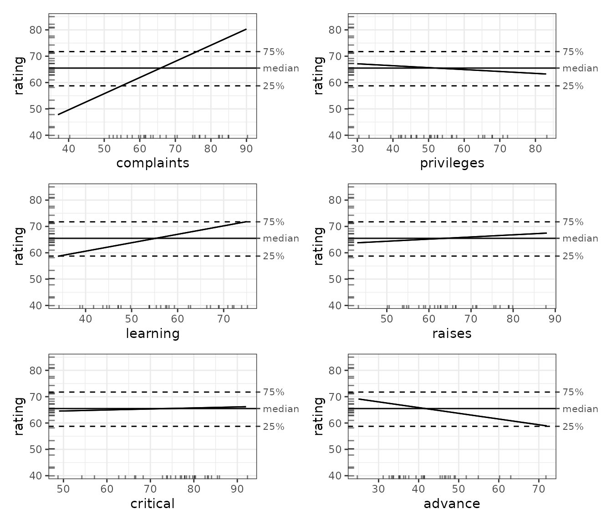
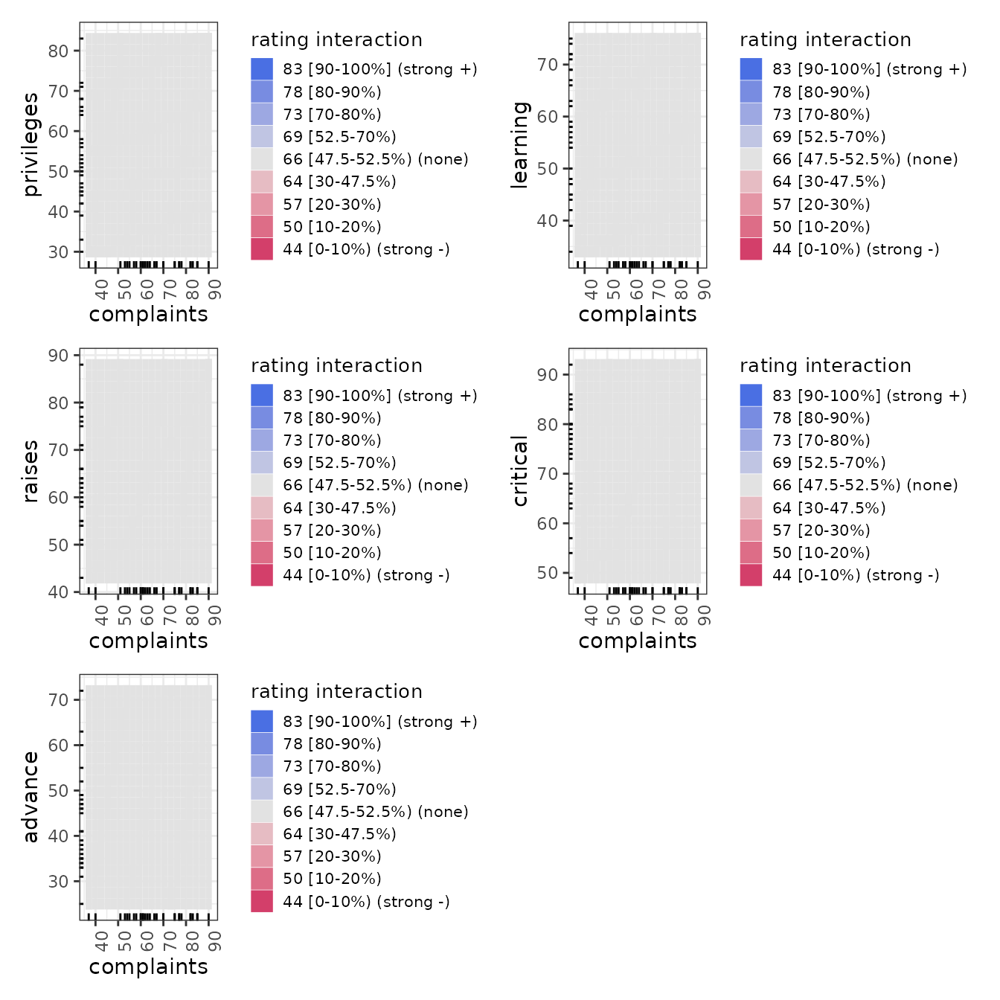
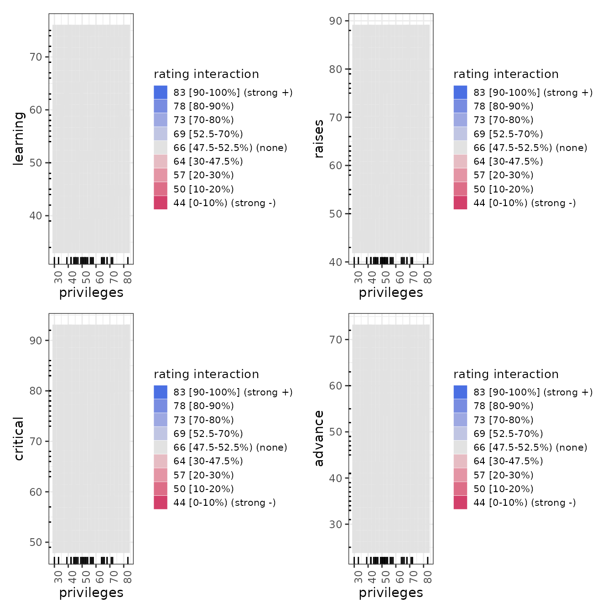
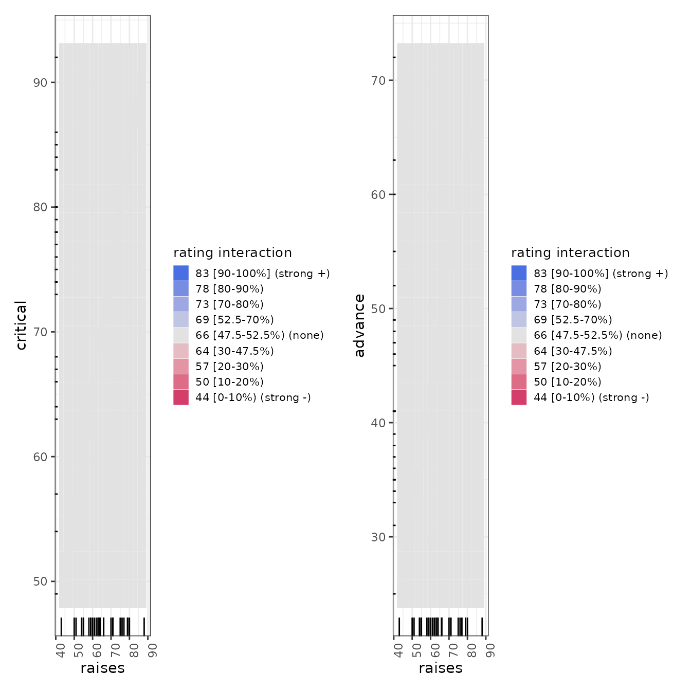
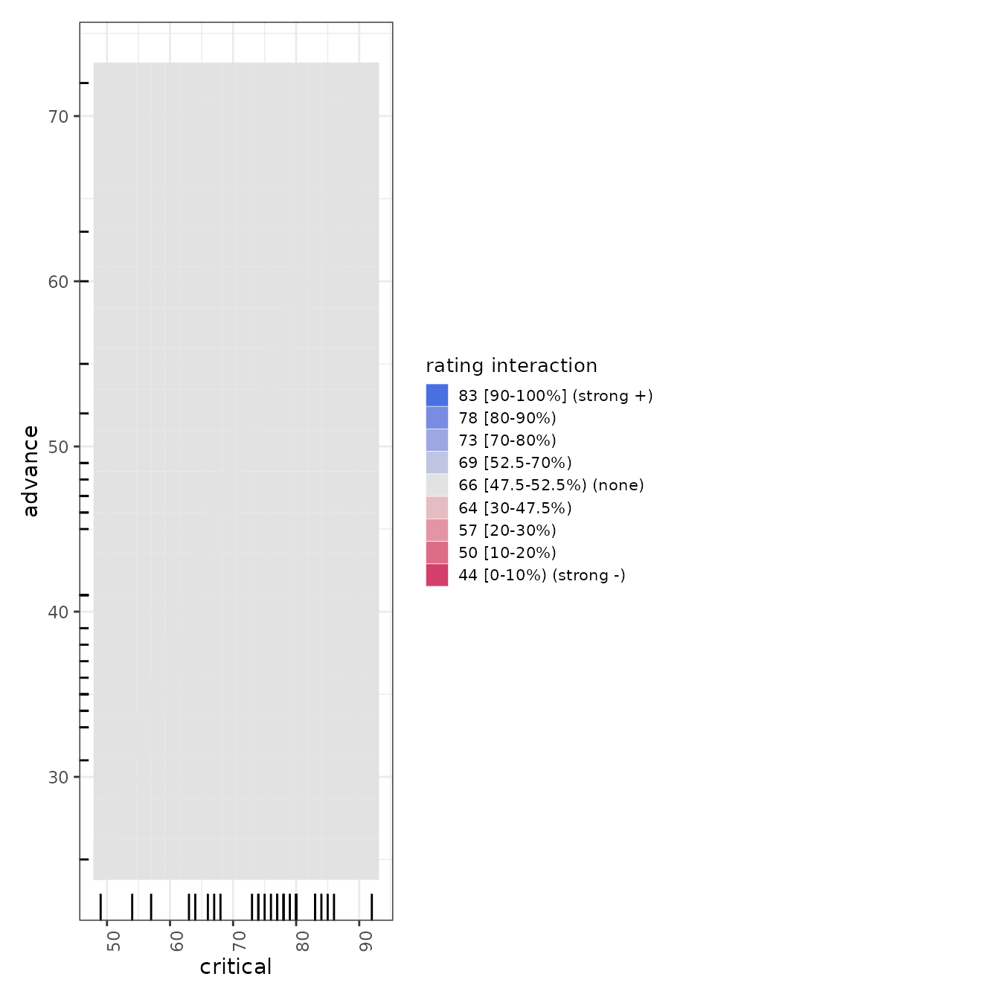
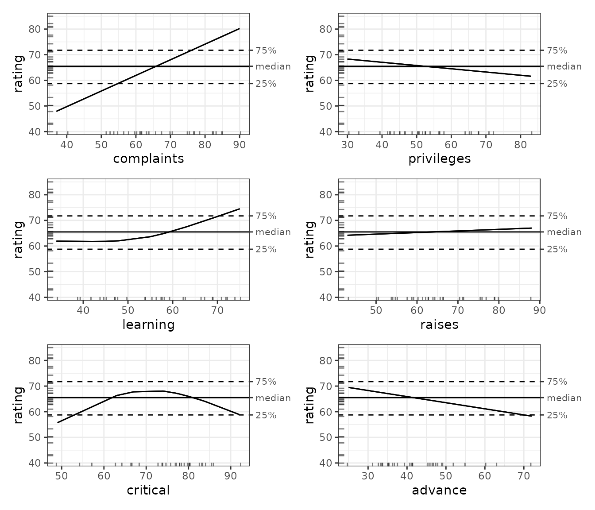

Analyzing small datasets (fewer than 2000 rows) with ALE
Chitu Okoli
January 9, 2024
Source:vignettes/ale-small-datasets.Rmd
ale-small-datasets.RmdThis vignette demonstrates using the ale package on
small datasets, as is often the case with statistical inference. You
should first read the introductory vignette that
explains general functionality of the package; this vignette goes beyond
those details to discuss issues unique to small datasets.
What is a “small” dataset?
An obvious question is, “How small is ‘small’?” This is a very complex question and it is way beyond the scope of this vignette to try to answer it rigorously. But we can simply say that the key issue at stake is that applying the training-test split that is common in machine learning is a crucial technique for increasing the generalizability of data analysis. So, the question becomes focused to, “How small is too small for a training-test split for machine learning analysis?” The rule of thumb I am familiar with is that machine learning requires at least 200 rows of data for each predictor variable. So, for example, if you have five input variables, you would need at least 1000 rows of data. But note that this does not refer to the size of the entire dataset but to the minimum size of the training subset. So, if you carry out an 80-20 split on the full dataset (that is, 80% training set), then you would need at least 1000 rows for the training set and another 250 rows for the test set, for a minimum of 1250 rows. (And if you carry out hyperparameter tuning with cross validation on that training set, then you need even more data.) If you see where this is headed, you might quickly realize that most datasets of less than 2000 rows are probably “small”. You can see that even many datasets that are more than 2000 rows are nonetheless “small”, and so probably need the techniques mentioned in this vignette.
We begin by loading the necessary libraries.
attitude dataset
Most analyses use the attitude dataset, built-in with R:
“From a survey of the clerical employees of a large financial
organization, the data are aggregated from the questionnaires of the
approximately 35 employees for each of 30 (randomly selected)
departments.” Since we’re talking about “small” datasets, we figure that
we might as well demonstrate principles with extremely small
examples.
Description
From a survey of the clerical employees of a large financial organization, the data are aggregated from the questionnaires of the approximately 35 employees for each of 30 (randomly selected) departments. The numbers give the percent proportion of favourable responses to seven questions in each department.
Format
A data frame with 30 observations on 7 variables. The first column are the short names from the reference, the second one the variable names in the data frame:
| Variable | Type | Description | |
|---|---|---|---|
| Y | rating | numeric | Overall rating |
| X[1] | complaints | numeric | Handling of employee complaints |
| X[2] | privileges | numeric | Does not allow special privileges |
| X[3] | learning | numeric | Opportunity to learn |
| X[4] | raises | numeric | Raises based on performance |
| X[5] | critical | numeric | Too critical |
| X[6] | advance | numeric | Advancement |
Source
Chatterjee, S. and Price, B. (1977) Regression Analysis by Example. New York: Wiley. (Section 3.7, p.68ff of 2nd ed.(1991).)
str(attitude)
#> 'data.frame': 30 obs. of 7 variables:
#> $ rating : num 43 63 71 61 81 43 58 71 72 67 ...
#> $ complaints: num 51 64 70 63 78 55 67 75 82 61 ...
#> $ privileges: num 30 51 68 45 56 49 42 50 72 45 ...
#> $ learning : num 39 54 69 47 66 44 56 55 67 47 ...
#> $ raises : num 61 63 76 54 71 54 66 70 71 62 ...
#> $ critical : num 92 73 86 84 83 49 68 66 83 80 ...
#> $ advance : num 45 47 48 35 47 34 35 41 31 41 ...
summary(attitude)
#> rating complaints privileges learning raises
#> Min. :40.00 Min. :37.0 Min. :30.00 Min. :34.00 Min. :43.00
#> 1st Qu.:58.75 1st Qu.:58.5 1st Qu.:45.00 1st Qu.:47.00 1st Qu.:58.25
#> Median :65.50 Median :65.0 Median :51.50 Median :56.50 Median :63.50
#> Mean :64.63 Mean :66.6 Mean :53.13 Mean :56.37 Mean :64.63
#> 3rd Qu.:71.75 3rd Qu.:77.0 3rd Qu.:62.50 3rd Qu.:66.75 3rd Qu.:71.00
#> Max. :85.00 Max. :90.0 Max. :83.00 Max. :75.00 Max. :88.00
#> critical advance
#> Min. :49.00 Min. :25.00
#> 1st Qu.:69.25 1st Qu.:35.00
#> Median :77.50 Median :41.00
#> Mean :74.77 Mean :42.93
#> 3rd Qu.:80.00 3rd Qu.:47.75
#> Max. :92.00 Max. :72.00We first run ALE analysis on this dataset as if it were a valid
regular dataset, even though it is too small for a proper training-test
split. This is a small-scale demonstration mainly to demonstrate that
ale package is valid for analyzing even small datasets, not
just the large datasets typically used for machine learning.
ALE for ordinary least squares regression (multiple linear regression)
Ordinary least squares (OLS) regression is the most generic multivariate statistical technique. Thus, we use it as a baseline illustration to help motivate the value of ALE for interpreting the analysis of small data samples.
We train an OLS model to predict average rating:
lm_attitude <- lm(rating ~ ., data = attitude)
summary(lm_attitude)
#>
#> Call:
#> lm(formula = rating ~ ., data = attitude)
#>
#> Residuals:
#> Min 1Q Median 3Q Max
#> -10.9418 -4.3555 0.3158 5.5425 11.5990
#>
#> Coefficients:
#> Estimate Std. Error t value Pr(>|t|)
#> (Intercept) 10.78708 11.58926 0.931 0.361634
#> complaints 0.61319 0.16098 3.809 0.000903 ***
#> privileges -0.07305 0.13572 -0.538 0.595594
#> learning 0.32033 0.16852 1.901 0.069925 .
#> raises 0.08173 0.22148 0.369 0.715480
#> critical 0.03838 0.14700 0.261 0.796334
#> advance -0.21706 0.17821 -1.218 0.235577
#> ---
#> Signif. codes: 0 '***' 0.001 '**' 0.01 '*' 0.05 '.' 0.1 ' ' 1
#>
#> Residual standard error: 7.068 on 23 degrees of freedom
#> Multiple R-squared: 0.7326, Adjusted R-squared: 0.6628
#> F-statistic: 10.5 on 6 and 23 DF, p-value: 1.24e-05At the very least, the ale is useful for visualizing the
effects of model variables. Note that for now, we run ale
with no bootstrapping (the default) because small samples require a
special bootstrap approach, as explained below. For now, all we are
doing is using ALE to accurately visualize what the model estimates.
ale_lm_attitude_simple <- ale(attitude, lm_attitude)
#> Calculating ALE ■ 0% | ETA: ?
# Print all plots
gridExtra::grid.arrange(grobs = ale_lm_attitude_simple$plots, ncol = 2)
This visualization confirms what we see in the model coefficients above: complaints have a strong positive effect on ratings and learning has a more moderate effect. However, the ALE indicates a stronger effect of advance than the regression coefficients suggest. The other variables have relatively little effect on ratings. We will see shortly that proper bootstrapping of the model can shed some light on the discrepancies.
What is unique about ALE compared to other approaches is that it visualizes the effect of each variable irrespective of interactions that might or might not exist with other variables, whether these other interacting variables are included in the model or not.
We can use ale_ixn() to visualize the possible existence
of any interactions:
ale_lm_attitude_ixn <- ale_ixn(attitude, lm_attitude)
#> Calculating ALE interactions ■■■■■■ 17% | ETA: 1s
# Print plots
ale_lm_attitude_ixn$plots |>
purrr::walk(\(.x1) { # extract list of x1 ALE outputs
gridExtra::grid.arrange(grobs = .x1, ncol = 2) # plot all x1 plots
})
This is a powerful use-case for the ale package: it can
be used to explore the existence of interactions after the fact; they do
not need to be hypothesized beforehand. However, without bootstrapping,
such findings cannot be considered reliable. In this case, there are no
interactions in this dataset, so we will not continue exploring
them.
Full model bootstrapping
We have referred frequently to the importance of bootstrapping. None
of our model results, with or without ALE, should be considered reliable
without being bootstrapped. For large datasets with clear separation
between training and testing samples, ale bootstraps the
ALE results of the test data. However, when a dataset is too small to be
subdivided into training and test sets, then the entire model should be
bootstrapped. That is, multiple models should be trained, one on each
bootstrap sample. The reliable results are the average results of all
the bootstrap models, however many there are.
The model_bootstrap() function automatically carries out
full-model bootstrapping suitable for small datasets. Specifically,
it:
- Creates multiple bootstrap samples (default 100; the user can specify any number);
- Creates a model on each bootstrap sample;
- Calculates model overall statistics, variable coefficients, and ALE values for each model on each bootstrap sample;
- Calculates the mean, median, and lower and upper confidence intervals for each of those values across all bootstrap samples.
model_bootstrap() has two required arguments. Consistent
with tidyverse conventions, its first argument is a dataset,
data. The second argument is the model object to be
analyzed. For objects that follow standard R modelling conventions,
model_bootstrap() should be able to automatically recognize
and parse the model object. So, here is the call to
model_bootstrap():
mb_lm <- model_bootstrap(
attitude,
lm_attitude,
boot_it = 10, # 100 by default but reduced here for a faster demonstration
silent = TRUE # progress bars disabled for the vignette
)By default, model_bootstrap() creates 100 bootstrap
samples of the provided dataset and creates 100 + 1 models on the data
(one for each bootstrap sample and then once for the original dataset).
(However, so that this illustration runs faster, we demonstrate it here
with only 10 iterations.) Beyond ALE data, it also provides bootstrapped
overall model statistics (provided through broom::glance())
and bootstrapped model coefficients (provided through
broom::tidy()). Any of the default options for
broom::glance(), broom::tidy(), and
ale() can be customized, along with defaults for
model_bootstrap(), such as the number of bootstrap
iterations. You can consult the help file for these details with
help(model_bootstrap).
model_bootstrap() returns a list with the following
elements (depending on values requested in the output
argument:
-
model_stats: bootstrapped results frombroom::glance() -
model_coefs: bootstrapped results frombroom::tidy() -
ale_data: bootstrapped ALE data and plots -
boot_data: full bootstrap data (not returned by default)
Here are the bootstrapped overall model statistics:
mb_lm$model_stats
#> # A tibble: 8 × 7
#> name estimate conf.low mean median conf.high sd
#> <chr> <dbl> <dbl> <dbl> <dbl> <dbl> <dbl>
#> 1 r.squared 0.793 6.78e-1 0.793 0.822 0.874 0.0758
#> 2 adj.r.squared 0.739 5.94e-1 0.739 0.775 0.841 0.0956
#> 3 sigma 6.03 4.62e+0 6.03 5.91 7.65 1.05
#> 4 statistic 16.9 8.07e+0 16.9 17.7 26.7 6.86
#> 5 p.value 0.0000203 3.53e-9 0.0000203 0.000000159 0.0000922 0.0000362
#> 6 df 6 6 e+0 6 6 6 0
#> 7 df.residual 23 2.3 e+1 23 23 23 0
#> 8 nobs 30 3 e+1 30 30 30 0Here are the bootstrapped model coefficients:
mb_lm$model_coefs
#> # A tibble: 7 × 7
#> term estimate conf.low mean median conf.high std.error
#> <chr> <dbl> <dbl> <dbl> <dbl> <dbl> <dbl>
#> 1 (Intercept) 8.40 -15.4 8.40 6.57 37.1 19.9
#> 2 complaints 0.561 0.370 0.561 0.556 0.772 0.144
#> 3 privileges -0.0575 -0.325 -0.0575 0.0323 0.187 0.199
#> 4 learning 0.227 0.0385 0.227 0.233 0.434 0.131
#> 5 raises 0.215 -0.0105 0.215 0.169 0.472 0.179
#> 6 critical 0.0300 -0.303 0.0300 0.120 0.302 0.235
#> 7 advance -0.173 -0.509 -0.173 -0.0816 0.133 0.239Here we can visualize the results of the ALE plots.
gridExtra::grid.arrange(grobs = mb_lm$ale$plots, ncol = 2)
The key to interpreting the effects in these models is contrasting the grey bootstrapped confidence bands surrounding the average (median) ALE effect with the thin horizontal grey band labelled ‘median \(\pm\) 2.5%’. Anything within \(\pm\) 2.5% of the median is in the 5% middle of the data. Only bootstrapped effects that are clearly beyond this middle band may be considered significant. By this criteria, considering that the median rating was 65.5%, we can conclude that:
- Complaints that were handled at below around 68% led to below-average overall ratings; complaints that were handled above around 72% are associated with above-average overall ratings.
- The 95% bootstrapped confidence intervals of every other variable fully overlap the entire 5% median band. Thus, despite the general trends of some of the data (in particular learning’s positive trend and advance’s negative trend), the data does not support claims that any other factor had a convincingly meaningful effect on ratings.
Although this is a basic demonstration, it readily shows how crucial proper bootstrapping is to make meaningful inferences from data analysis.
ALE for general additive models (GAM)
A major limitation of OLS regression is that it models all relationships between the x variables and y as straight lines. But it is unlikely that all relationships are truly linear. OLS cannot accurately capture non-linear relationships.
Because the samples here are relatively small, we will use general additive models (GAM) for the modelling. To grossly oversimplify things, GAM is an extension of statistical regression analysis that lets the model fit flexible patterns in the data instead of being restricted to the best-fitting straight line. It is an ideal approach for samples that are too small for machine learning because it provides flexible curves unlike ordinary least squares regression yet will not overfit excessively as would most machine learning techniques when working with such small samples.
With GAM, the variables that we want to become flexible need to be
wrapped in the s (smooth) function, e.g.,
s(complaints). For this example, we will smooth all our
numerical input variables:
gam_attitude <- mgcv::gam(rating ~ complaints + privileges + s(learning) +
raises + s(critical) + advance,
data = attitude)
summary(gam_attitude)
#>
#> Family: gaussian
#> Link function: identity
#>
#> Formula:
#> rating ~ complaints + privileges + s(learning) + raises + s(critical) +
#> advance
#>
#> Parametric coefficients:
#> Estimate Std. Error t value Pr(>|t|)
#> (Intercept) 36.97245 11.60967 3.185 0.004501 **
#> complaints 0.60933 0.13297 4.582 0.000165 ***
#> privileges -0.12662 0.11432 -1.108 0.280715
#> raises 0.06222 0.18900 0.329 0.745314
#> advance -0.23790 0.14807 -1.607 0.123198
#> ---
#> Signif. codes: 0 '***' 0.001 '**' 0.01 '*' 0.05 '.' 0.1 ' ' 1
#>
#> Approximate significance of smooth terms:
#> edf Ref.df F p-value
#> s(learning) 1.923 2.369 3.761 0.0312 *
#> s(critical) 2.296 2.862 3.272 0.0565 .
#> ---
#> Signif. codes: 0 '***' 0.001 '**' 0.01 '*' 0.05 '.' 0.1 ' ' 1
#>
#> R-sq.(adj) = 0.776 Deviance explained = 83.9%
#> GCV = 47.947 Scale est. = 33.213 n = 30By comparing the adjusted R2 of the OLS model (0.663) with that of the GAM model (0.776), we can readily see that the GAM model provides a superior fit to the data.
To understand which variables were responsible for this relationship, the results for the smooth terms in GAM are not readily interpretable. They need to be visualized for effective interpretation—ALE is perfect for such purposes.
ale_gam_attitude_simple <- ale(attitude, gam_attitude)
#> Calculating ALE ■ 0% | ETA: ?
gridExtra::grid.arrange(grobs = ale_gam_attitude_simple$plots, ncol = 2)
Compared to the OLS results above, the GAM results provide quite a surprise concerning the shape of the effect of employees’ perceptions that their department is too critical–it seems that both low criticism and very high criticism negatively affect ratings. However, before trying to interpret these results, we must remember that results that are not bootstrapped are simply not reliable. So, let us see what bootstrapping will give us.
mb_gam <- model_bootstrap(
attitude,
gam_attitude,
boot_it = 10, # 100 by default but reduced here for a faster demonstration
silent = TRUE # progress bars disabled for the vignette
)
mb_gam$model_stats
#> # A tibble: 3 × 7
#> name estimate conf.low mean median conf.high sd
#> <chr> <dbl> <dbl> <dbl> <dbl> <dbl> <dbl>
#> 1 df 14.4 8.18 14.4 14.5 20.5 4.62
#> 2 df.residual 15.6 9.45 15.6 15.5 21.8 4.62
#> 3 nobs 30 30 30 30 30 0
mb_gam$model_coefs
#> # A tibble: 2 × 7
#> term estimate conf.low mean median conf.high std.error
#> <chr> <dbl> <dbl> <dbl> <dbl> <dbl> <dbl>
#> 1 s(learning) 5.17 1.20 5.17 4.78 8.99 3.58
#> 2 s(critical) 4.24 1.26 4.24 4.84 6.94 2.26
gridExtra::grid.arrange(grobs = mb_gam$ale$plots, ncol = 2)
The bootstrapped GAM results tell a rather different story from the OLS results. In this case, the bootstrap confidence bands of all the variables (even of complaints) fully overlap with the entirety of the median non-significance region. Even the average slopes have vanished from all variables except for complaint, where it remains positive, yet insignificant because of the wide confidence interval.
So, what should we conclude? First, it is tempting to retain the OLS results because they tell a more interesting story. But we consider that this would be irresponsible since the GAM model is clearly superior in terms of adjusted R2: it is the model that far more reliably tells us what is really going on. And what does it tell us?
- There seems to be a positive effect of handled complaints on ratings (the higher the percentage of complaints that are handled, the higher the average rating), but the data does not allow us to be sufficiently certain to generalize these results.
- There is insufficient evidence that any of the other variables have any effect at all.
No doubt, the inconclusive results are because the dataset is so small (only 30 rows). A dataset even double that size might show significant effects at least for complaints, if not for other variables.
model_call_string argument for non-standard models
model_bootstrap() accesses the model object and
internally modifies it to retrain the model on bootstrapped datasets. It
should be able to automatically manipulate most R model objects that are
used for statistical analysis. However, if an object does not follow
standard conventions for R model objects, model_bootstrap()
might not be able to manipulate it. If so, the function will fail early
with an appropriate error message. In that case, the user must specify
the model_call_string argument with a character string of
the full call for the model with boot_data as the data
argument for the call. (boot_data is a placeholder for the
bootstrap datasets that model_bootstrap() will internally
work with.)
To show how this works, let’s pretend that the mgcv::gam
object needs such special treatment. To construct, the
model_call_string, we must first execute the model and make
sure that it works. We did that earlier but we repeat it here for this
demonstration
gam_attitude_again <- mgcv::gam(rating ~ complaints + privileges + s(learning) +
raises + s(critical) + advance,
data = attitude)
summary(gam_attitude_again)
#>
#> Family: gaussian
#> Link function: identity
#>
#> Formula:
#> rating ~ complaints + privileges + s(learning) + raises + s(critical) +
#> advance
#>
#> Parametric coefficients:
#> Estimate Std. Error t value Pr(>|t|)
#> (Intercept) 36.97245 11.60967 3.185 0.004501 **
#> complaints 0.60933 0.13297 4.582 0.000165 ***
#> privileges -0.12662 0.11432 -1.108 0.280715
#> raises 0.06222 0.18900 0.329 0.745314
#> advance -0.23790 0.14807 -1.607 0.123198
#> ---
#> Signif. codes: 0 '***' 0.001 '**' 0.01 '*' 0.05 '.' 0.1 ' ' 1
#>
#> Approximate significance of smooth terms:
#> edf Ref.df F p-value
#> s(learning) 1.923 2.369 3.761 0.0312 *
#> s(critical) 2.296 2.862 3.272 0.0565 .
#> ---
#> Signif. codes: 0 '***' 0.001 '**' 0.01 '*' 0.05 '.' 0.1 ' ' 1
#>
#> R-sq.(adj) = 0.776 Deviance explained = 83.9%
#> GCV = 47.947 Scale est. = 33.213 n = 30Once we’re sure that the model call works, then the
model_call_string is constructed with three simple
steps:
- Wrap the entire call (everything to the right of the assignment
operator
<-) in quotes. - Replace the dataset in the data argument with
boot_data. - Pass the quoted string to
model_bootstrap()as themodel_call_stringargument (the argument must be explicitly named).
So, here is the form of the call to model_bootstrap()
for a non-standard model object type:
mb_gam_non_standard <- model_bootstrap(
attitude,
model_call_string = 'mgcv::gam(rating ~ complaints + privileges + s(learning) +
raises + s(critical) + advance,
data = boot_data)',
boot_it = 10, # 100 by default but reduced here for a faster demonstration
silent = TRUE # progress bars disabled for the vignette
)
mb_gam_non_standard$model_stats
#> # A tibble: 3 × 7
#> name estimate conf.low mean median conf.high sd
#> <chr> <dbl> <dbl> <dbl> <dbl> <dbl> <dbl>
#> 1 df 14.4 8.18 14.4 14.5 20.5 4.62
#> 2 df.residual 15.6 9.45 15.6 15.5 21.8 4.62
#> 3 nobs 30 30 30 30 30 0Everything else works as normal.